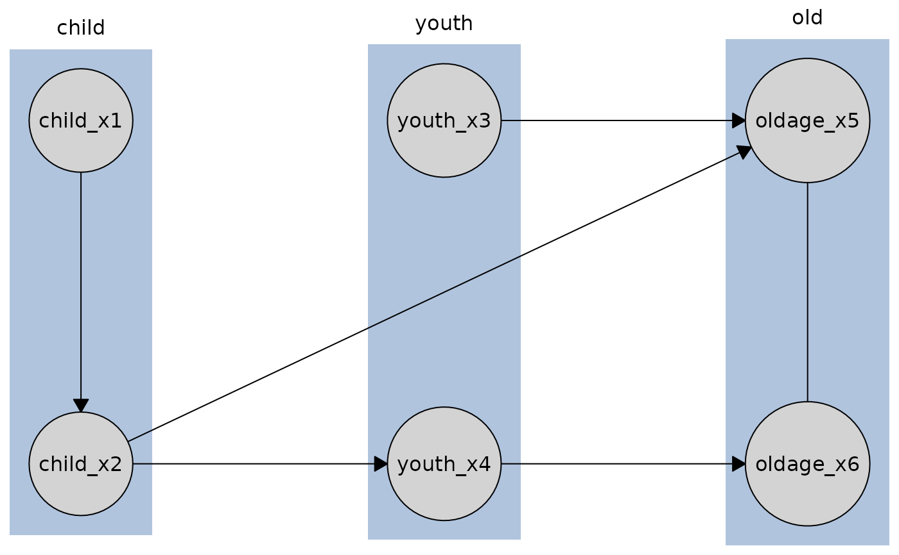
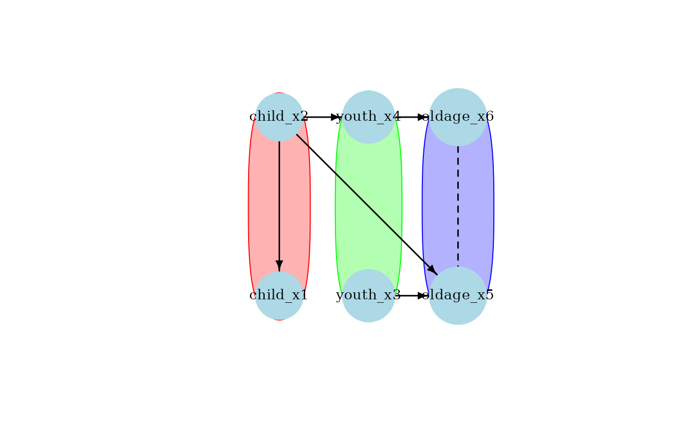

This class implements the search algorithms from the causalDisco package, which wraps and adds temporal order to pcalg algorithms. It allows to set the data, sufficient statistics, test, score, and algorithm.
Public fields
dataA
data.frameholding the data set currently attached to the search object. Can be set withset_data().scoreA function that will be used to build the score, when data is set. Can be set with
$set_score(). Recognized values are:"tbic"- Temporal BIC score for Gaussian data. See TemporalBIC."tbdeu"- Temporal BDeu score for discrete data. See TemporalBDeu.
testA function that will be used to test independence. Can be set with
$set_test(). Recognized values are:"reg"- Regression test for discrete or binary data. Seereg_test()."fisher_z"- Fisher Z test for Gaussian data. Seecor_test().
algA function that will be used to run the search algorithm. Can be set with
$set_alg(). Recognized values are:paramsA list of parameters for the test and algorithm. Can be set with
$set_params(). TODO: not secure yet in terms of distributing arguments. Use with caution.suff_statSufficient statistic. The format and contents of the sufficient statistic depends on which test is being used.
knowledgeA
Knowledgeobject holding background knowledge.
Methods
Method set_score()
Sets the score for the search algorithm.
Usage
CausalDiscoSearch$set_score(method, params = list())Method set_knowledge()
Sets the background knowledge for the search with a Knowledge object.
Arguments
knA
Knowledgeobject.directed_as_undirectedLogical; whether to treat directed edges in the knowledge as undirected. Default is
FALSE. This is due to the nature of how pcalg handles background knowledge when usingpcalg::skeleton()under the hood intpc()andtfci().
Examples
# Generally, we do not recommend using the R6 classes directly, but rather
# use the disco() or any method function, for example pc(), instead.
data(tpc_example)
# background knowledge (tiers + one exogenous var)
kn <- knowledge(
tpc_example,
tier(
child ~ starts_with("child"),
youth ~ starts_with("youth"),
old ~ starts_with("oldage")
)
)
# Recommended (TPC example):
my_tpc <- tpc(engine = "causalDisco", test = "fisher_z", alpha = 0.05)
result <- disco(data = tpc_example, method = my_tpc, knowledge = kn)
plot(result)

# or
my_tpc <- my_tpc |>
set_knowledge(kn)
result <- my_tpc(tpc_example)
plot(result)

# Using R6 class:
# --- Constraint-based: TPC ----------------------------------------------------
s_tpc <- CausalDiscoSearch$new()
s_tpc$set_params(list(verbose = FALSE))
s_tpc$set_test("fisher_z", alpha = 0.2)
s_tpc$set_alg("tpc")
s_tpc$set_knowledge(kn, directed_as_undirected = TRUE)
s_tpc$set_data(tpc_example)
res_tpc <- s_tpc$run_search()
print(res_tpc)
#>
#> ── caugi graph ─────────────────────────────────────────────────────────────────
#> Graph class: PDAG
#>
#> ── Edges ──
#>
#> from edge to
#> <chr> <chr> <chr>
#> 1 child_x1 --> child_x2
#> 2 child_x2 --> oldage_x5
#> 3 child_x2 --> youth_x4
#> 4 oldage_x5 --- oldage_x6
#> 5 youth_x3 --> oldage_x5
#> 6 youth_x4 --> oldage_x6
#> ── Nodes ──
#>
#> name
#> <chr>
#> 1 child_x2
#> 2 child_x1
#> 3 youth_x4
#> 4 youth_x3
#> 5 oldage_x6
#> 6 oldage_x5
#> ── Knowledge object ────────────────────────────────────────────────────────────
#>
#> ── Tiers ──
#>
#> tier
#> <chr>
#> 1 child
#> 2 youth
#> 3 old
#> ── Variables ──
#>
#> var tier
#> <chr> <chr>
#> 1 child_x1 child
#> 2 child_x2 child
#> 3 youth_x3 youth
#> 4 youth_x4 youth
#> 5 oldage_x5 old
#> 6 oldage_x6 old
# Switch to TFCI on the same object (reuses suffStat/test)
s_tpc$set_alg("tfci")
res_tfci <- s_tpc$run_search()
print(res_tfci)
#> ── caugi graph ─────────────────────────────────────────────────────────────────
#> Graph class: UNKNOWN
#>
#> ── Edges ──
#>
#> from edge to
#> <chr> <chr> <chr>
#> 1 child_x2 o-o child_x1
#> 2 child_x2 o-> oldage_x5
#> 3 child_x2 o-> youth_x4
#> 4 oldage_x5 --> oldage_x6
#> 5 youth_x3 o-> oldage_x5
#> 6 youth_x4 --> oldage_x6
#> ── Nodes ──
#>
#> name
#> <chr>
#> 1 child_x2
#> 2 child_x1
#> 3 youth_x4
#> 4 youth_x3
#> 5 oldage_x6
#> 6 oldage_x5
#> ── Knowledge object ────────────────────────────────────────────────────────────
#>
#> ── Tiers ──
#>
#> tier
#> <chr>
#> 1 child
#> 2 youth
#> 3 old
#> ── Variables ──
#>
#> var tier
#> <chr> <chr>
#> 1 child_x1 child
#> 2 child_x2 child
#> 3 youth_x3 youth
#> 4 youth_x4 youth
#> 5 oldage_x5 old
#> 6 oldage_x6 old
# --- Score-based: TGES --------------------------------------------------------
s_tges <- CausalDiscoSearch$new()
s_tges$set_score("tbic") # Gaussian temporal score
s_tges$set_alg("tges")
s_tges$set_data(tpc_example, set_suff_stat = FALSE) # suff stat not used for TGES
s_tges$set_knowledge(kn)
res_tges <- s_tges$run_search()
print(res_tges)
#> ── caugi graph ─────────────────────────────────────────────────────────────────
#> Graph class: PDAG
#>
#> ── Edges ──
#>
#> from edge to
#> <chr> <chr> <chr>
#> 1 child_x1 --- child_x2
#> 2 child_x2 --> oldage_x5
#> 3 child_x2 --> youth_x4
#> 4 oldage_x5 --> oldage_x6
#> 5 youth_x3 --> oldage_x5
#> 6 youth_x4 --> oldage_x6
#> ── Nodes ──
#>
#> name
#> <chr>
#> 1 child_x2
#> 2 child_x1
#> 3 youth_x4
#> 4 youth_x3
#> 5 oldage_x6
#> 6 oldage_x5
#> ── Knowledge object ────────────────────────────────────────────────────────────
# --- Intentional error demonstrations ----------------------------------------
# run_search() without setting an algorithm
try(CausalDiscoSearch$new()$run_search(tpc_example))
#> Error : Test must be set before sufficient statistic.
# set_suff_stat() requires data and test first
s_err <- CausalDiscoSearch$new()
try(s_err$set_suff_stat()) # no data & no test
#> Error : Data must be set before sufficient statistic.
s_err$set_data(tpc_example, set_suff_stat = FALSE)
try(s_err$set_suff_stat()) # no test
#> Error : Test must be set before sufficient statistic.
# unknown test / score / algorithm
try(CausalDiscoSearch$new()$set_test("not_a_test"))
#> Error : Unknown method: not_a_test
try(CausalDiscoSearch$new()$set_score("not_a_score"))
#> Error : Unknown score type using causalDisco engine: not_a_score
try(CausalDiscoSearch$new()$set_alg("not_an_alg"))
#> Error : Unknown method type using causalDisco engine: not_an_alg
# set_knowledge() requires a `Knowledge` object
try(CausalDiscoSearch$new()$set_knowledge(list(not = "Knowledge")))
#> Error : Input must be a knowledge instance.